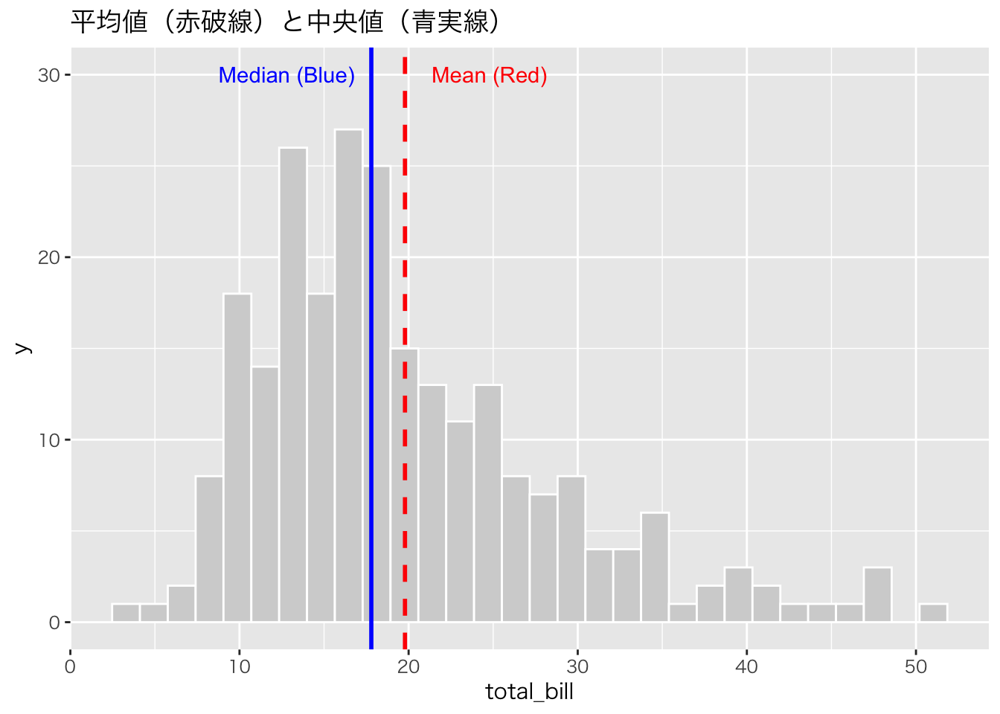

library(tidyverse)
url <- "https://raw.githubusercontent.com/mwaskom/seaborn-data/master/tips.csv"
tips <- read_csv(url)第3回 記述統計 (1) 数値要約

今回の目標
- データの中心を表す指標（代表値）を理解する。
- データのばらつきを表す指標（散布度）を理解する。
- Rを使ってこれらの指標を計算する。
記述統計とは
記述統計（Descriptive Statistics）とは、データの特徴を数値やグラフで要約・記述する方法です。主に以下の2つの側面からデータを把握します：
- 中心的傾向（代表値）: データの「中心」がどこにあるか
- 散布度（ばらつき）: データがどれくらい広がっているか
準備
今回も tidyverse と tips データを使います。
代表値：データの中心
平均値 (Mean)
すべてのデータを足して、データの個数で割ったものです。
\[\bar{x} = \frac{1}{n}\sum_{i=1}^{n} x_i\]
mean(tips$total_bill)
#> [1] 19.78594中央値 (Median)
データを小さい順に並べたときに、ちょうど真ん中にくる値です。 外れ値（極端に大きい/小さい値）の影響を受けにくいという特徴があります。
median(tips$total_bill)
#> [1] 17.795最頻値 (Mode)
データの中で最も頻繁に出現する値です。Rには標準で最頻値を求める関数がないため、自分で計算します。
# カテゴリ変数の最頻値を確認
tips %>%
count(day) %>%
arrange(desc(n))平均値 vs 中央値：どちらを使うべきか
| 状況 | 推奨される代表値 |
|---|---|
| 左右対称な分布 | 平均値 |
| 歪んだ分布（外れ値あり） | 中央値 |
| 所得や資産のデータ | 中央値 |
| テストの点数 | 平均値 |
散布度：データのばらつき
範囲 (Range)
最大値と最小値の差です。
range(tips$total_bill) # 最小値と最大値
#> [1] 3.07 50.81
max(tips$total_bill) - min(tips$total_bill) # 範囲
#> [1] 47.74分散 (Variance)
データが平均値からどれくらい離れているかを表す指標です。 Rの var() 関数は不偏分散を計算します。
\[s^2 = \frac{1}{n-1}\sum_{i=1}^{n} (x_i - \bar{x})^2\]
var(tips$total_bill)
#> [1] 79.25294標準偏差 (Standard Deviation)
分散の平方根をとったものです。元のデータと同じ単位になるので直感的に分かりやすいです。
\[s = \sqrt{s^2}\]
sd(tips$total_bill)
#> [1] 8.902412変動係数 (Coefficient of Variation)
標準偏差を平均値で割ったもので、単位に依存しないばらつきの指標です。異なる単位のデータのばらつきを比較するときに便利です。
\[CV = \frac{s}{\bar{x}} \times 100\%\]
# チップと支払総額のばらつきを比較
cv_tip <- sd(tips$tip) / mean(tips$tip) * 100
cv_bill <- sd(tips$total_bill) / mean(tips$total_bill) * 100
cat("チップの変動係数:", cv_tip, "%\n")
#> チップの変動係数: 46.14775 %
cat("支払総額の変動係数:", cv_bill, "%\n")
#> 支払総額の変動係数: 44.99362 %四分位数 (Quartiles)
データを小さい順に並べて4等分したときの区切り値です。 summary() 関数を使うと、最小値、第1四分位数、中央値、平均値、第3四分位数、最大値をまとめて表示できます。
summary(tips$total_bill)
#> Min. 1st Qu. Median Mean 3rd Qu. Max.
#> 3.07 13.35 17.80 19.79 24.13 50.81結果の見方: - Min: 最小値 - 1st Qu: 第1四分位数（データの下位25%の境界値） - Median: 中央値 - Mean: 平均値 - 3rd Qu: 第3四分位数（データの下位75%の境界値） - Max: 最大値
四分位範囲 (IQR: Interquartile Range)
第3四分位数と第1四分位数の差を 四分位範囲 と呼びます。 データの中央50%がどれくらいの幅に収まっているかを表します。R では IQR() 関数で計算できます。
IQR(tips$total_bill)
#> [1] 10.78四分位範囲は、外れ値の影響を受けにくい散布度の指標として有効です。
外れ値の検出
統計分析では、極端に大きい・小さい値（外れ値）がデータに含まれていることがあります。 外れ値の基準として、以下がよく使われます。
- 第1四分位数 - 1.5 × IQR より小さい値
- 第3四分位数 + 1.5 × IQR より大きい値
Q1 <- quantile(tips$total_bill, 0.25)
Q3 <- quantile(tips$total_bill, 0.75)
IQR_val <- IQR(tips$total_bill)
# 外れ値の境界
lower_bound <- Q1 - 1.5 * IQR_val
upper_bound <- Q3 + 1.5 * IQR_val
cat("外れ値の下限:", lower_bound, "\n")
#> 外れ値の下限: -2.8225
cat("外れ値の上限:", upper_bound, "\n")
#> 外れ値の上限: 40.2975
# 外れ値を持つデータを抽出
tips %>%
filter(total_bill < lower_bound | total_bill > upper_bound) %>%
select(total_bill, tip, day, time)平均値と中央値の違いを可視化
分布が歪んでいる場合、平均値と中央値はずれます。 ヒストグラムに直線を引いて確認してみましょう。
# 平均と中央値を計算 {.unnumbered}
mean_val <- mean(tips$total_bill)
med_val <- median(tips$total_bill)
# プロット {.unnumbered}
ggplot(tips, aes(x = total_bill)) +
theme_gray(base_family = "HiraKakuProN-W3") +
geom_histogram(bins = 30, fill = "lightgray", color = "white") +
geom_vline(xintercept = mean_val, color = "red", linetype = "dashed", size = 1) +
geom_vline(xintercept = med_val, color = "blue", linetype = "solid", size = 1) +
annotate("text", x = mean_val + 5, y = 30, label = "Mean (Red)", color = "red") +
annotate("text", x = med_val - 5, y = 30, label = "Median (Blue)", color = "blue") +
labs(title = "平均値（赤破線）と中央値（青実線）")
グループごとの集計
dplyr の group_by() と summarize() を組み合わせると、グループごとの統計量を簡単に計算できます。 例えば、男女別 (sex) の支払総額 (total_bill) の平均と標準偏差を求めてみましょう。
tips %>%
group_by(sex) %>%
summarize(
avg_bill = mean(total_bill),
sd_bill = sd(total_bill),
count = n() # データの個数
)課題
tipsデータを使って、時間帯 (time) ごとのチップ (tip) の平均値を計算してください。summary()関数を使って、チップ (tip) の分布を確認してください。
練習問題
練習1: 基本的な記述統計
tips データの size（グループの人数）について以下を計算してください： 1. 平均値 2. 中央値 3. 標準偏差 4. 最小値と最大値
練習2: グループ別の比較
喫煙者 (smoker == "Yes") と非喫煙者 (smoker == "No") で、支払総額の平均値と標準偏差を比較してください。
練習3: 外れ値の影響
tipsデータに外れ値（total_bill = 100）を1つ追加したデータを作成してください- 元のデータと新しいデータで、平均値と中央値を比較してください
- どちらの代表値が外れ値の影響を受けやすいですか？
記述統計量のまとめ
| 種類 | 指標 | R関数 | 特徴 |
|---|---|---|---|
| 代表値 | 平均値 | mean() |
全データを使用、外れ値に敏感 |
| 代表値 | 中央値 | median() |
外れ値に頑健 |
| 散布度 | 分散 | var() |
単位が元の2乗 |
| 散布度 | 標準偏差 | sd() |
元の単位と同じ |
| 散布度 | 四分位範囲 | IQR() |
外れ値に頑健 |
| 位置 | 四分位数 | quantile() |
データの位置を表す |